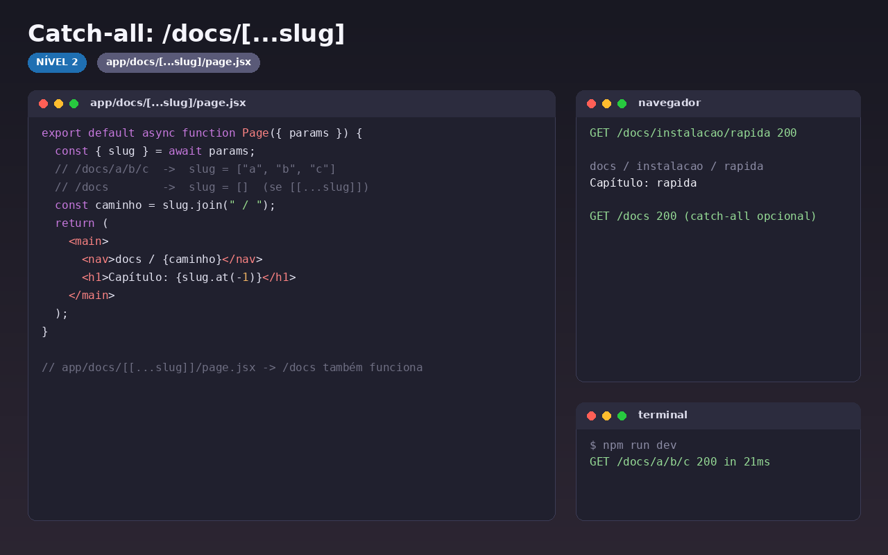

Catch-all [...slug]
A Ana 👩💻 documentou o projeto dela em pastas aninhadas: /docs/instalacao/rapida, /docs/rotas/dinamicas, /docs/api/route… Criar uma página para cada combinação seria um pesadelo. A saída foi o catch-all: uma pasta [...slug] que "pega tudo" o que vier depois, como um aspirador de URL.
- A diferença entre
[id](um segmento) e[...slug](vários segmentos) - Como
params.slugvira um array de strings - O catch-all opcional
[[...slug]]— por que/docstambém funciona - Montar breadcrumbs a partir do slug
A ideia: o aspirador de URLs
Pense numa rota dinâmica comum, /blog/[id]: ela captura exatamente um pedaço da URL — /blog/42 funciona, mas /blog/2025/abril não. Já o catch-all [...slug] é como um aspirador ligado na ponta da URL: tudo o que vier depois do prefixo ele engole de uma vez e entrega como uma lista. Em /docs/a/b/c, o aspirador devolve ["a", "b", "c"].
Essa lista é a chave de tudo: com ela você monta breadcrumbs ("docs / a / b / c"), acha o arquivo certo num sistema de docs estilo wiki, ou valida cada nível. O nome slug é só tradição — pode ser [...caminho], [...partes], o que fizer sentido no seu projeto.
Existe ainda a versão opcional, com colchetes duplos: [[...slug]]. Ela é o aspirador que também deixa o caminho vazio passar — ou seja, /docs (sem nada depois) também cai nessa página, com slug = []. É a diferença entre "precisa ter pelo menos um item" e "pode ser vazio".
Na prática: documentação em uma página só
Crie app/docs/[...slug]/page.jsx. O params.slug chega como array de strings — lembre-se do await:
import Link from "next/link";
import { notFound } from "next/navigation";
async function getDoc(slug) {
// no mundo real: lê o arquivo docs/<slug.join("/")>.md
const chave = slug.join("/");
const docs = { "instalacao/rapida": "Instale com npm…", "rotas/dinamicas": "Use [id]…" };
return docs[chave] ?? null;
}
export default async function DocPage({ params }) {
const { slug } = await params; // /docs/a/b/c -> ["a","b","c"]
const conteudo = await getDoc(slug);
if (!conteudo) notFound();
return (
<main>
<nav>
<Link href="/docs">docs</Link>
{slug.map((parte, i) => (
<span key={i}>
{" / "}
<Link href={`/docs/${slug.slice(0, i + 1).join("/")}`}>{parte}</Link>
</span>
))}
</nav>
<h1>Capítulo: {slug.at(-1)}</h1>
<p>{conteudo}</p>
</main>
);
}
Catch-all opcional: [[...slug]]
Se a Ana quer que /docs (a home da documentação) também seja atendida pela mesma página, basta trocar para app/docs/[[...slug]]/page.jsx. Aí slug pode ser [], e o slug.at(-1) acima daria undefined — então vale tratar o caso vazio:
export default async function DocPage({ params }) {
const { slug } = await params; // /docs -> [] ; /docs/a -> ["a"]
if (slug.length === 0) {
return <h1>Documentação — escolha um capítulo</h1>;
}
// … resto igual
}
| Convenção | URL atendida | params resultante |
|---|---|---|
app/docs/[...slug]/page.jsx | /docs/a, /docs/a/b/c | slug: ["a"], slug: ["a","b","c"] |
app/docs/[...slug]/page.jsx | /docs ❌ (404) | — |
app/docs/[[...slug]]/page.jsx | /docs ✔ e /docs/a/b ✔ | slug: [], slug: ["a","b"] |
app/[...slug]/page.jsx (na raiz) | qualquer URL de vários níveis | lista completa do caminho |
Missão: simulando o catch-all: dada a lista slug = ["docs","rotas","dinamicas"], monte o breadcrumb "docs / rotas / dinamicas" usando slug.join(" / ") e mostre o último capítulo com slug.at(-1). Rode e confira.
function App() {
// como se a URL fosse /docs/rotas/dinamicas
const slug = ["docs", "rotas", "dinamicas"];
// 👉 complete: breadcrumb e título do capítulo
const breadcrumb = "";
const capitulo = "";
return (
<div style={{ fontFamily: "sans-serif", padding: 16 }}>
<nav style={{ color: "#666" }}>{breadcrumb}</nav>
<h2>Capítulo: {capitulo}</h2>
</div>
);
}function App() {
const slug = ["docs", "rotas", "dinamicas"];
const breadcrumb = slug.join(" / ");
const capitulo = slug.at(-1);
return (
<div style={{ fontFamily: "sans-serif", padding: 16 }}>
<nav style={{ color: "#666" }}>{breadcrumb}</nav>
<h2>Capítulo: {capitulo}</h2>
</div>
);
}
[[...slug]], tanto /docs quanto /docs/instalacao/rapida caem na mesma página — o slug chega como array.Quando dá errado
slug como string. É comum, principalmente quem vem de [id], fazer slug.toUpperCase() ou /docs/${slug} achando que é texto — mas no catch-all ele é um array:TypeError: slug.toUpperCase is not a function
at DocPage (app/docs/[...slug]/page.jsx:12:19)
Tradução: slug não tem toUpperCase porque é um array, não uma string. Correção: use slug.join("/") quando precisar do caminho como texto, ou itere o array. Outro erro real: esquecer os colchetes triplos e escrever [..slug] — a pasta vira rota literal e nada funciona.
Exercícios
1. Com a rota app/docs/[...slug]/page.jsx, o que chega em params.slug na URL /docs/a/b/c?
2. Qual convenção faz /docs (sem nada depois) também ser atendida?
3. Complete: para transformar o array slug no texto "a/b/c", qual método você chama?